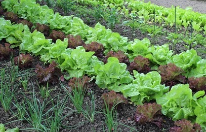

O objetivo desse site é a princípio desenvolver no Colégio Julia Wanderley, o Projeto Agricultura Sustentável. Num primeiro momento apresentaria os benefícíos desse tipo de alimentação e propor ao colégio a possibildiade e viabilidade de fazermos uma horta sustentável, onde beneficiaria no primeiro momento, as pessoas envolvidas no projetos, os alunos e professoresos.
No primeiro momento, desenvolver o projeto para montarmos a horta, determinando o local, os tipos de verduras e hortaliças que poderiam ser cultivadas naquele local. Essa prática se daria durante as aulas de Geografia, Ciências e outras afins, onde os próprios alunos desenvolveria esse projeto juntamente com os professores das disciplinas envolvidas.
Ao final, teríamos estudado e aprendido várias técnicas de manejo, de cuidados com o solo, de irrigação e adubação orgâniza. Ao longo do ano, teríamos nossa própria horta no colégio e beneficiaria a comunidade local
